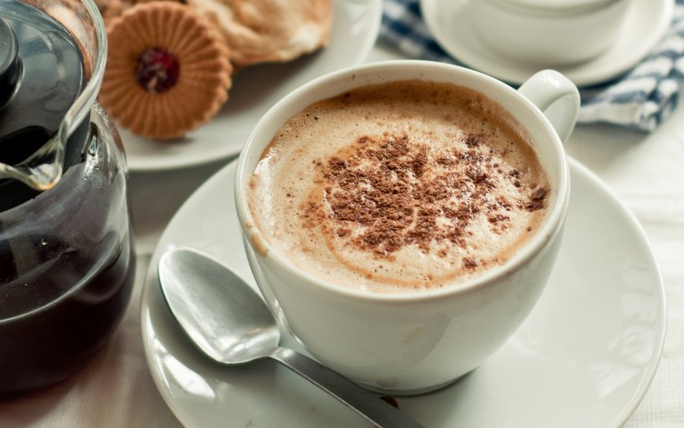
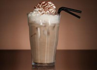

Кофе
Ко́фе (от араб. قهوة [qahwa], через нидерл.
koffie, англ. coffеe и архаизм ко́фий, ко́фей[1])
— напиток из жареных и перемолотых зёрен кофейного
дерева.
Способы приготовления напитка
Cappuccino (Капучино)
Cappuccino (Капучино). Этот рецепт предполагает добавление в кофе молока, взбитого в горячую пену. Это достаточно большой по объему напиток —150 мл. В приготовлении капучино всего его составляющие (эспрессо, молоко, молочная пенка) смешиваются в соотношении один к одному. Классический вариант — это в 40 мл эспрессо добавляется 40 мл молока и столько же молочной пены
Айс кофе

Большинство из нас привыкло пить кофе горячим, но на самом деле он может стать отличным прохладительным напитком, который взбодрит и освежит в жаркие дни. Этот напиток называют айс-кофе.
Классический рецепт айс-кофе
Состав:
черный кофе – 100 мл;
молоко – 0,2 л;
лед, взбитые сливки – по вкусу.
Айриш кофе

Один из самых популярных кофейных напитков, содержащих крепкий алкоголь — ирландский виски. Это горячий кофейный коктейль, в который добавлен алкоголь (виски, коньяк, бренди), сахар и сливки.